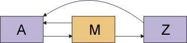

| Concepto: Pruebas del desarrollador |
 |
|
| Elementos relacionados |
|---|
IntroducciónLa frase "Pruebas del desarrollador" se utiliza para categorizar las tareas de prueba que realizan más correctamente los desarrolladores de software. También incluye los productos de trabajo que crean estas tareas. La prueba de desarrollador abarca el trabajo tradicionalmente pensado bajo las categorías siguientes: Pruebas de unidad, parte de las Pruebas de integración y algunos aspectos las denominadas Pruebas del sistema. La prueba de desarrollador suele asociarse con tareas de la disciplina de implementación, pero también está relacionada con tareas de la disciplina de análisis y diseño. Al pensar en la prueba de desarrollo de esta manera "integral", se ayuda a mitigar algunos de los riesgos asociados con el enfoque más "atomista" que se suele adoptar. En el enfoque tradicional de las pruebas de desarrollo, el esfuerzo se centra, inicialmente, en la evaluación de que todas las unidades funcionan independientemente. Al final del ciclo vital de desarrollo, cuando el trabajo de desarrollo está a punto de terminarse, las unidades integradas se ensamblan en un sistema o subsistema de trabajo y se prueban en esta configuración por primera vez. Esta propuesta tiene una serie de errores. En primer lugar, al fomentar un enfoque en fases de la prueba de las unidades integradas y subsistemas posteriores, los errores identificados durante estas pruebas suelen encontrarse demasiado tarde. Este descubrimiento tardío tiene como resultado la decisión de no emprender acciones correctivas o requiere un trabajo mayor de corrección. Esta revisión es cara y reduce el progreso en otras áreas. Esto aumenta el riesgo de que se desbarate o abandone el proyecto. En segundo lugar, al crear límites rígidos entre las pruebas de unidad, de integración y del sistema, aumenta la probabilidad de que nadie descubra los errores que sobrepasan los límites. El riesgo se agrava cuando la responsabilidad de estos tipos de pruebas se asigna a equipos separados. El estilo de prueba de desarrollador que recomienda RUP anima al desarrollador a que se centre en las pruebas más valiosas y apropiadas para ejecutarlas en un momento dado. Incluso en el ámbito de una sola iteración, suele ser más eficaz que el desarrollador busque y corrija todos los defectos que pueda del código, sin una carga adicional en el intercambio a un grupo de prueba separado. El resultado deseado es que se descubran pronto la mayoría de los errores de software significativos, independiente de si estos son errores se encuentran en la unidad independiente, en la integración de las unidades o en el trabajo de las unidades integradas en un caso de ejemplo de usuario final significativo. Obstáculos de la iniciación a la Prueba de desarrolladorMuchos desarrolladores que intentan por primera vez hacer un trabajo de prueba sustancialmente más minucioso abandonan el esfuerzo muy pronto, porque tienen la impresión de que no obtienen resultados de valor. Además, algunos desarrolladores que empiezan bien la prueba de desarrollador se encuentran con que han creado un conjunto de aplicaciones de prueba insostenible y terminan por abandonar. En esta página se ofrecen algunas directrices para superar los primeros obstáculos y para crear un conjunto de aplicaciones de prueba que evite la trampa de mantenimiento. Para obtener más información, consulte el apartado Directriz: Mantenimiento de conjuntos de aplicaciones de prueba automatizados. Establezca expectativasLos desarrolladores que encuentran la prueba gratificante, la hacen. Los que la encuentran trabajosa, la evitan. Este hecho se debe simplemente a la naturaleza de la mayoría de los desarrolladores en la mayoría de las industrias, y tratarlo como una falta de disciplina vergonzosa no ha producido resultados satisfactorios a lo largo de la historia. Por lo tanto, como desarrollador, debe esperar que la prueba sea gratificante y hacer lo correspondiente para que lo sea. La prueba de desarrollador ideal sigue un bucle de prueba de edición muy estricto. Se hace un cambio muy pequeño en el producto, como añadir un método nuevo a una clase y, a continuación, se vuelven a ejecutar inmediatamente las pruebas. Si falla alguna prueba, sabrá exactamente cual es el código que provoca el error. Este ritmo sencillo y estable de desarrollo es la mejor gratificación que puede ofrecer una prueba de desarrollador. Las sesiones de depuración largas deberían ser la excepción. Es frecuente que un cambio realizado en una clase interrumpa algo en otra, por lo que debería contar con repetir la ejecución de no sólo las pruebas de la clase modificada, sino de muchas pruebas. Idealmente, debe volver a ejecutarse el conjunto de aplicaciones de prueba completo para el componente muchas veces cada hora. Cada vez que haga un cambio significativo, debe volver a ejecutar el conjunto de aplicaciones, observar los resultados y continuar con el siguiente cambio o arreglar el último. Debe invertir parte del esfuerzo en conseguir obtener la información de retorno rápido. Automatice las pruebasNormalmente, la ejecución de las pruebas manuales no resulta práctica. Para algunos componentes, las pruebas automatizadas son sencillas. Un ejemplo sería una base de datos en la memoria, que se comunique con los clientes a través de una API y no tenga otra interfaz con el mundo exterior. Las pruebas para esta base de datos serían similares a esta: /* Comprobar que los elementos se pueden añadir como mucho una vez. */// SetupDatabase db = tnew Database(); Las pruebas sólo se diferencian del código de cliente corriente en una cosa: en vez que de confiar en el resultado de las llamadas a la API, los comprueban. Si la API facilita la escritura del código de cliente, también facilita la escritura del código de prueba. Si el código de prueba no es fácil de escribir, ha recibido un aviso previo de que la API se puede mejorar. El diseño de primera prueba es coherente con el foco de Rational Unified Process en tratar los riesgos importantes pronto. Sin embargo, cuanto más estrecha sea la conexión del componente con el mundo exterior, más difícil será probarlo. Hay dos casos comunes: interfaces gráficas de usuario y componentes de fondo. Interfaces gráficas de usuarioSupongamos que la base de datos del ejemplo anterior recibe los datos a través de una devolución de llamada de un objeto de interfaz de usuario. La devolución de llamada se invoca cuando el usuario rellena varios campos de texto y pulsa un botón. No es demasiado apetecible realizar esta prueba rellenando manualmente los campos y pulsando el botón varias veces en una hora. Debe encontrar una manera de proporcionar la información de los campos con un control programático, normalmente "pulsando" el botón del código. Al pulsar el botón, se ejecuta parte del código del componente. Lo más probable es que el código cambie el estado de varios objetos de interfaz de usuario. También debe encontrar una manera de consultar estos objetos de manera programática. Componentes de fondoSupongamos que el componente que está probando no implementa una base de datos, sino que es un derivador de una base de datos real en disco. Realizar la prueba contra una base de datos real puede ser complicado; es posible que sea difícil de instalar y configurar, y que la licencia sea cara. La base de datos puede ralentizar tanto las pruebas que no desee ejecutarlas a menudo. En estos casos, es mejor "apagar" la base de datos y sustituirla por un componente más simple que haga lo suficiente para poder soportar las pruebas. Los fragmentos para simulación también son útiles cuando un componente con el que se comunica su componente todavía no está preparado. No es recomendable esperar a que otra persona termine el código para realizar las pruebas. Para obtener más información, consulte el apartado Concepto: Fragmentos para simulación. No escriba sus propias herramientasLa prueba de desarrollador parece bastante sencilla. Se configuran varios objetos, se hace una llamada a través de una API, se comprueba el resultado y se anuncia una anomalía de la prueba si los resultados no son los esperados. También es conveniente poder agrupar las pruebas de manera que se puedan ejecutar individualmente o como conjuntos completos de aplicaciones. Las herramientas que dan soporte a estos requisitos se llaman infraestructuras de prueba. La prueba de desarrollador es sencilla y los requisitos de las infraestructuras de prueba no son complicados. Sin embargo, si cede a la tentación de escribir su propia infraestructura de prueba, perderá mucho más tiempo jugueteando con la infraestructura del que seguramente espera. Hay muchas infraestructuras de prueba disponibles, tanto comerciales como de código abierto, y no hay motivo para no utilizar alguna de estas. Cree código de soporteEl código de prueba suele ser repetitivo. Las secuencias de código como la siguiente son comunes:
Este código se crea copiando una comprobación, pegándola y editándola para hacer otra comprobación. El peligro de esta acción es doble. Si la interfaz cambia, habrá que hacer mucho trabajo de edición. (En casos más complicados, no bastará con un sencillo reemplazo global). Además, si el código es complicado, se puede perder el propósito de la prueba entre todo el texto. Cuando vea que se repite, considere seriamente la posibilidad de factorizar la repetición en código de soporte. Aunque este ejemplo de código es sencillo, es más fácil de leer y mantener si se escribe así:
Los desarrolladores que escriben pruebas suelen abusar del copiar y pegar. Si cree que lo está haciendo, le resultará útil hacer lo contrario conscientemente. Tome la decisión de deshacer el código de todo el texto duplicado. Escriba las pruebas antesEscribir las pruebas después del código es una faena. Se tiene mucha prisa por acabarlo y seguir con otra cosa. Al escribir las pruebas antes del código, las pruebas formarán parte de un bucle de información de retorno positivo. A medida que implementa más código, verá pasar todas las pruebas hasta que haya terminado. Si se escriben las pruebas antes, el nivel de satisfacción es más alto, y no se tarda más tiempo. Para obtener más información sobre cómo hacer las pruebas antes, consulte el apartado Concepto: Diseño de primera prueba Haga las pruebas comprensiblesDebe contar con que usted, u otra persona, tendrá que modificar las pruebas más adelante. Una situación típica es que una iteración posterior pida un cambio en el comportamiento del componente. Suponga, por ejemplo, que el componente declaró un método de raíz cuadrada como el siguiente:
En esta versión, un argumento negativo provocó que sqrt devolviese NaN ("no es un número" del estándar IEEE 754-1985 Standard for Binary Floating-Point Arithmetic). En la iteración nueva, el método de raíz cuadrada aceptará números negativos y devolverá un resultado complejo.
Habrá que cambiar las pruebas antiguas de sqrt. Es decir, saber lo que hacen y actualizarlas de manera que funcionen con el sqrt nuevo. Cuando actualice las pruebas, tenga cuidado de no destruir su capacidad de detectar errores. Una manera de hacerlo es la siguiente:
Hay otras maneras más sutiles: las pruebas se modifican para que se puedan ejecutar, pero ya no prueban lo que fueron diseñadas para probar originalmente. El resultado final, en muchas iteraciones, puede ser un conjunto de aplicaciones de prueba demasiado débil para capturar muchos errores. A veces, esto se llama "decadencia del conjunto de aplicaciones de prueba". No merece la pena mantener un conjunto de aplicaciones decaído. No se puede mantener la capacidad de detectar de errores de una prueba a no ser que esté claro qué Ideas de prueba implementa una prueba. El código de prueba no suele estar comentado, a pesar de que a veces es más difícil comprender su motivo que el del código de producto. La decadencia del conjunto de aplicaciones de prueba es menos probable en las pruebas directas para sqrt que en las pruebas indirectas. Habrá código que invoca a sqrt. Este código tendrá pruebas. Cuando sqrt cambie, algunas de estas pruebas fallarán. La persona que cambie sqrt probablemente tendrá que cambiar estas pruebas. Dado que esta persona está poco familiarizada con las pruebas, y que su relación con el cambio es menos clara, es más probable que las debilite en el proceso de hacerlas pasar. Cuando cree código de soporte para pruebas (como se recomienda más arriba), tenga cuidado: el código de soporte debe clarificar, no oscurecer, el objetivo de las pruebas que lo utilizan. Una queja común sobre los programas orientados a objetos es que no hay ningún sitio donde se pueda hacer todo. Si observa cualquier método, lo único que descubrirá es que reenvía el trabajo a otro lugar. Una estructura de este tipo tiene ventajas, pero dificulta que las personas nuevas conozcan el código. A no ser que hagan un esfuerzo, es probable que sus cambios sean incorrectos o que hagan el código todavía más complicado o frágil. Esto también es cierto para el código de prueba, salvo que es todavía menos probable que los mantenedores posteriores realicen el trabajo adecuadamente. Puede evitar el problema escribiendo pruebas comprensibles. Haga que la estructura de la prueba coincida con la estructura del productoSupongamos que alguien ha heredado su componente y necesita cambiar una parte de éste. Puede que desee estudiar las pruebas anteriores para ayudarle a realizar el nuevo diseño, o que desee actualizar las pruebas antiguas antes de escribir el código (diseño de primera prueba). Todas estas buenas intenciones se quedarán en nada si no consigue encontrar las pruebas adecuadas. Lo que tendrá que hacer es realizar el cambio, ver qué pruebas fallan y arreglarlas. Esto contribuiría a la decadencia del conjunto de aplicaciones de prueba. Por este motivo, es importante que el conjunto de aplicaciones de prueba esté bien estructurado y que la ubicación de las pruebas sea previsible a partir de la estructura del producto. Por lo general, los desarrolladores ordenan las pruebas en un jerarquía paralela, con una clase de prueba por cada clase de producto. De esta manera, si alguien alguien cambia una clase llamada Registro, sabrá que la clase de prueba es RegistroPrueba y dónde puede encontrar el archivo de origen. Permita que las pruebas infrinjan la encapsulaciónPuede limitar las pruebas para interactuar con el componente exactamente de la misma manera que el código de cliente, mediante la misma interfaz que utiliza el código de cliente. No obstante, esto tiene desventajas. Supongamos que está probando una clase simple que mantiene una lista con dos enlaces:
Figura 1: Lista con dos enlaces En concreto, está probando el método DoublyLinkedList.insertBefore(Object existing, Object newObject). En una de las pruebas, introduzca un elemento en medio de la lista y, a continuación, compruebe si se ha introducido correctamente. La prueba utiliza la lista anterior para crear esta lista actualizada:
Figura 2: Lista con dos enlaces - elemento insertado Comprueba la corrección de la lista de la siguiente manera: // the list is now one longer.expect(list.size()==3);// the new element is in the correct positionexpect(list.get(1)==m);// check that other elements are still there.expect(list.get(0)==a); expect(list.get(2)==z); Parece que esto es suficiente, pero no lo es. Supongamos que la implementación de la lista es incorrecta y que los punteros de retroceso no se han establecido correctamente. Es decir, supongamos que la lista actualizada tiene el siguiente aspecto:  Figura 3: Lista con dos enlaces - anomalía de implementación Si DoublyLinkedList.get(int index) cruza la lista desde el principio al final (probablemente), la prueba pasará por alto esta anomalía. Si la clase proporciona los métodos elementBefore y elementAfter, la comprobación de estas anomalías es sencilla: // Check that links were all updatedexpect(list.elementAfter(a)==m);expect(list.elementAfter(m)==z);expect(list.elementBefore(z)==m);//this will failexpect(list.elementBefore(m)==a); Pero, ¿y si no proporciona estos métodos? Podría concebir secuencias de llamadas a método más elaboradas que fallen si encuentran el defecto sospechoso. Por ejemplo: // Check whether back-link from Z is correct.list.insertBefore(z, x);// If it was incorrectly not updated, X will have// been inserted just after A.expect(list.get(1)==m); Sin embargo, una prueba de este tipo supone más trabajo de creación y es probable que sea significativamente más difícil de mantener. (A no ser que escriba unos buenos comentarios, no estará claro por qué la prueba está haciendo determinada operación). Hay dos soluciones:
La última suele ser la mejor solución, incluso para una clase sencilla como DoublyLinkedList y, especialmente, para las clases más complejas que se encuentran en los productos. Normalmente, las pruebas se colocan en el mismo paquete que la clase que prueban. Se les proporciona acceso de amigo o protegido. Errores característicos del diseño de pruebasCada prueba ejercita un componente y comprueba si los resultados son correctos. El diseño de la prueba, las entradas que utiliza y cómo comprueba la corrección, puede ser bueno para revelar defectos o puede ocultarlos involuntariamente. A continuación, se muestran algunos errores característicos del diseño de pruebas. No se han podido especificar los resultados esperados por adelantadoSupongamos que está probando un componente que convierte XML en HTML. Existe la tentación de coger XML de ejemplo, ejecutarlo en la conversión y, a continuación, observar los resultados en un navegador. Si la pantalla parece correcta, guarda el HTML como el resultado oficial esperado. Después, una prueba compara la salida real de la conversión con el resultado esperado. Esta práctica es peligrosa, ya que incluso los usuarios avanzados están acostumbrados a fiarse de lo que hace el ordenador y es probable que pase por alto errores en la apariencia de la pantalla. (A parte de que los navegadores tienen una tolerancia bastante alta al HTML con formato incorrecto). Al proponer el HTML incorrecto como resultado esperado oficial, se asegura de que la prueba nunca encontrará un problema. Es un poco menos peligroso realizar dos comprobaciones observando directamente el HTML. Dado que la salida es complicada, es fácil pasar por alto los errores. Encontrará más defectos si antes escribe la salida esperada a mano. No se ha podido comprobar el fondoNormalmente, las pruebas comprueban que se ha cambiado lo necesario, pero los creadores se olvidan con frecuencia de comprobar que no se ha tocado lo que no se tenía que tocar. Supongamos, por ejemplo, que un programa debe cambiar los 100 primeros registros de un archivo. Es una buena idea comprobar que la prueba 101 no se cambiado. En teoría, debe comprobar que no se ha olvidado nada del "fondo" (todo el sistema de archivos, toda la memoria, todo lo alcanzable a través de la red). En la práctica, debe elegir cuidadosamente qué puede permitirse comprobar. Es importante que tome esa decisión. No se ha podido comprobar la permanenciaEl hecho de que el componente le diga que ha realizado un cambio, no significa que se haya confirmado realmente en la base de datos. Debe comprobar la base de datos a través de otra ruta. No se ha podido añadir variedadUna prueba puede estar diseñada para comprobar el efecto de tres campos en un registro de la base de datos, pero hay que rellenar muchos otros campos para poder ejecutarla. A menudo, los verificadores utilizan los mismos valores una y otra vez para estos campos "irrelevantes". Por ejemplo, siempre utilizan el nombre de su mujer en los campos de texto, o 999 en los campos numéricos. El problema es que, a veces, lo que no debería importar, importa. De vez en cuando, hay un error que depende de una oscura combinación de entradas poco probables. Si siempre utiliza las mismas entradas, no dará oportunidad a encontrar estos errores. Si cambia las entradas constantemente, puede que los encuentre. Por lo general, apenas cuesta utilizar un número diferente a 999 o el nombre de otra persona. Si cambiar los valores utilizados en las pruebas tiene un coste ínfimo y tiene algún beneficio potencial, cámbielos. (Nota: No es inteligente utilizar el nombre de novias antiguas si la actual trabaja con usted). Aquí se encuentra otra ventaja. Un plausible fallo de que el programa utilice el campo X en vez de utilizar el campo Y. Si los dos campos contienen "Amanecer", no se puede detectar la anomalía. No se han podido utilizar datos realistasEs frecuente utilizar datos inventados en las pruebas. Por lo general, los datos son increíblemente simples. Por ejemplo, los nombre de clientes pueden ser "Mickey", "Snoopy" y "Donald". Puesto que los datos son diferentes de lo que especifican los usuarios reales (por ejemplo, mucho más breves), se pueden omitir defectos que verían los clientes reales. Por ejemplo, estos nombres de una sola palabra no detectarían que el código no admite nombres con espacios. Es prudente realizar un pequeño esfuerzo adicional para utilizar datos realistas. No se ha podido detectar que el código no funcionaSupongamos que inicializa un registro de la base de datos en cero, ejecuta un cálculo que debería tener cero como resultado de almacenamiento en el registro y, a continuación, comprueba que el registro es cero. ¿Qué ha mostrado la prueba? Puede que el cálculo no se haya realizado, que no se haya almacenado nada, y que la prueba no lo muestre. Este ejemplo parece poco probable. Aunque el mismo error puede producirse de maneras más sutiles. Por ejemplo, puede escribir una prueba para un programa de instalador complicado. La prueba se ha diseñado para comprobar que se eliminan todos los archivos temporales después de una instalación satisfactoria. Pero, dadas todas las opciones del instalador, en dicha prueba, no se ha creado un archivo temporal determinado. Seguramente sea el que el programa se olvidó de eliminar. No se ha podido detectar que el código realiza una función incorrectaA veces, los programas hacen lo correcto por motivos incorrectos. Como un ejemplo trivial, considere este código: if (a < b && c) La expresión lógica es errónea y ha escrito una prueba que hace que evalúe incorrectamente y tome la ramificación equivocada. Desgraciadamente, por pura coincidencia, la variable X tiene el valor 2 en dicha prueba. Por lo que, de manera accidental, el resultado de la ramificación errónea es correcto; igual que el resultado que hubiera devuelto la ramificación correcta. Para cada resultado esperado, debería preguntarse si hay alguna manera plausible de obtener ese resultado por motivos erróneos. A veces es imposible saberlo, pero otras veces no. |
© Copyright IBM Corp. 1987, 2006. Reservados todos los derechos. |